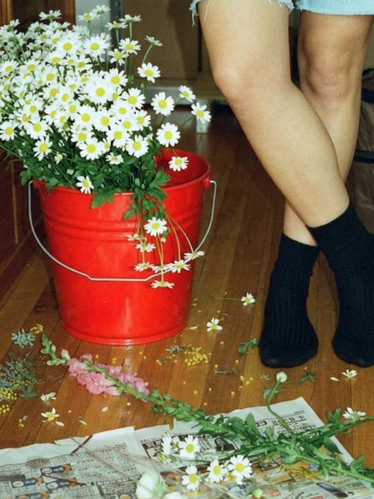

Kausi edellä
Vain sitä, mitä juuri nyt kukkii. Ei tuontia vastoin kauden henkeä.

Floréa syntyi halusta antaa villikukkien näyttää siltä, mitä ne ovat — epäsymmetrisiltä, elossa, hieman arvaamattomilta. Emme suorista vartta, joka haluaa kaartua.
Jokainen kimppu kootaan käsin kauden ehdoilla. Suosimme lähituottajien ja luomuviljelijöiden kukkia, ja käärimme ne kierrätyspaperiin — ei muovia.
Vain sitä, mitä juuri nyt kukkii. Ei tuontia vastoin kauden henkeä.
Jokainen varsi asetellaan käsin. Kaksi samanlaista kimppua ei synny.
Lähituotanto ja paperikääre. Minimoimme hävikin ja muovin.
Aamulla haemme kukat, päivällä sidomme ja iltapäivällä toimitamme. Pidämme valikoiman pienenä ja tuoreena — mieluummin vähän ja hyvää kuin paljon ja puolikuihtunutta.
Tule kurssille